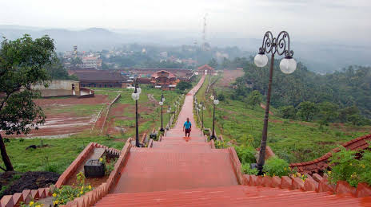
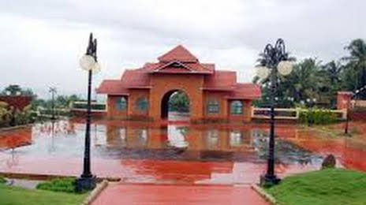
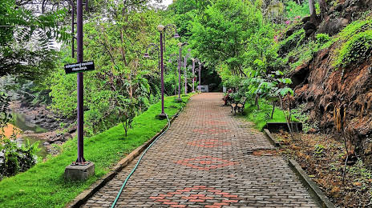
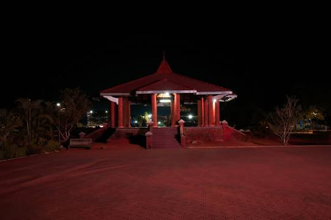

MALAPPURAM

Malappuram is one of the 14 districts in the Indian state of Kerala, with a coastline of 70 km (43 mi). It is the most populous district of Kerala, which is home to around 13% of the total population of the state.The district was formed on 16 June 1969. It spans an area of about 3,554 km2 (1,372 sq mi), making it the third-largest district of Kerala by area. It is the largest district of Kerala with the Western Ghats and the Arabian Sea on the eastern and the western borders respectively. It is the third major contributing district to the Gross State Domestic Product of Kerala as of 2019, after Ernakulam and Thiruvananthapuram.>
IMPORTANT PLACES TO VISIT

KOTTAKKUNNU


KOTTAKKUNNU ROAD
SHANTHITHEERAM PARK
